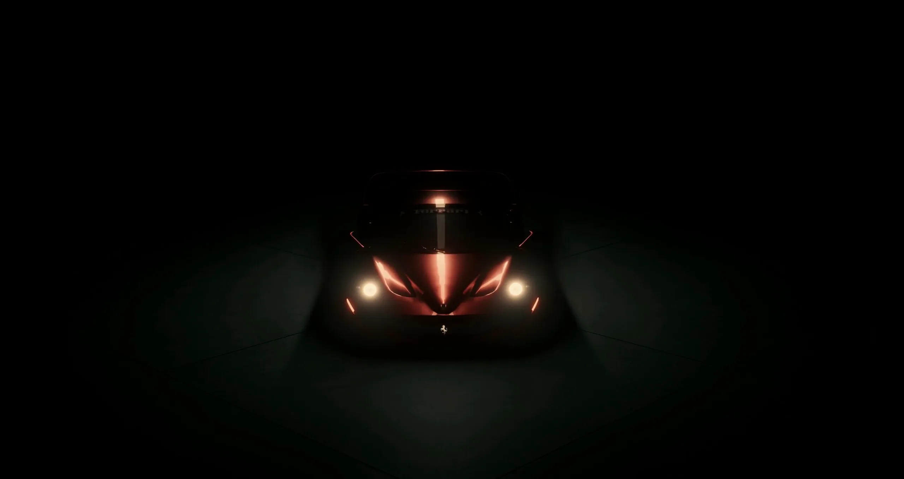
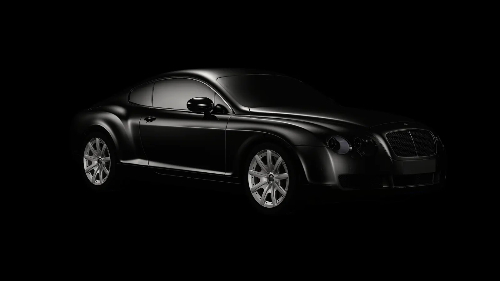

NOCTURNE
An invitational concours, held after dark.
The field opens below
The Field
Lit only where you stand — walk it slowly.
Best of Show · last seasonThe Black Continental
“Presented in the strictest possible specification — black on black, nothing brightened for the lawn. The body reads as one continuous reflection, which is precisely the standard this class exists to test.”
The Rules of the Dark
Judging begins when the last daylight is gone and ends before it returns. Every entry is examined under the field lamps and nothing else — a car that needs the sun to be beautiful has entered the wrong concours.
There are no trailers on the field. Every entry arrives on its own wheels, in the dark, and the arrival is watched. Several rosettes have been won and lost between the gate and the parking position.
Attendance is by invitation, and invitations are requested, not bought. The house reads every request personally and replies to all of them — including, kindly, the refusals.